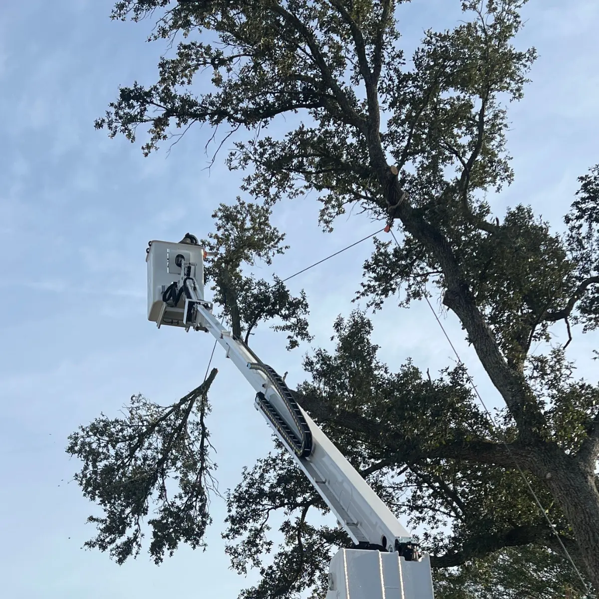

The Importance Of Community Involvement In Tree Preservation
Contact us today for an estimate on our Tree Preservation Services in NOLA!
Urgent or unsafe? Call (504) 732-0779


A Perfect Cut Tree is a leading cause working to promote community involvement in tree preservation and protection. Trees are essential for our planet’s survival as they provide oxygen, sequester carbon dioxide, reduce air pollution, help mitigate climate change and conserve water resources.
They also support local wildlife habitats and ecosystems by providing food, shelter, and nesting places.
Learn how community involvement is essential for tree preservation, and discover strategies for healthy and sustainable forests. Trees play a crucial role in providing clean air and water filtration, and the destruction of forests affects both humans and wildlife.
With deforestation on the rise, it’s important for communities to take responsibility for their local forests. This article explores the significance of protecting natural resources and encourages individuals to take part in tree protection initiatives. By working together, communities can ensure a green future for generations to come.

The Role Of Communities And Individuals In Tree Preservation Efforts
- Tree preservation is an important cause that requires a collaborative effort from communities and individuals.
- Trees provide vital environmental benefits such as reducing air pollution, providing habitats for wildlife, absorbing carbon dioxide and stabilizing soil erosion, and have aesthetic value which can enhance the physical environment of any area.
- Local governments should create policies promoting tree preservation and reforestation while restricting activities like deforestation.
- Communities should raise awareness, especially among young people, about the importance of preserving trees.
- Individuals can help by planting new trees in areas with depleted native species and leaving fallen leaves for nutrients, and homeowners can use non-invasive plants for landscaping instead of resource-intensive invasive species.
- The combined actions of communities and individuals are necessary for effective tree preservation efforts and to ensure a sustainable future for generations to come.

Public Education And Outreach Programs For Tree Preservation
Public education and outreach programs are important components of tree preservation efforts. These can help raise awareness in communities about the importance of trees by providing information on how to protect them, as well as inspiring people to get involved in the cause. Such initiatives should be designed to target both children and adults alike so that everyone has access to this knowledge. Schools can also play a role in publicizing these initiatives through integrating lessons about tree preservation into their curricula.
Community outreach events provide a valuable platform for discussing tree preservation strategies and regulations. Funding opportunities, such as government grants for sustainable forestry research, can ensure effective tree-preservation projects without compromising environmental conservation efforts.

Tree Planting And Reforestation Initiatives
- Planting or reforestation initiatives are important for tree preservation efforts and can help restore degraded forests while creating green spaces.
- Planting trees is also an effective way to combat climate change as they absorb carbon dioxide from the atmosphere, reducing greenhouse gas emissions.
- To ensure success, it is important to choose an appropriate tree species for the location that will thrive under local environmental conditions and implement seeding carefully with consideration given to soil fertility and nutrient availability levels.
- Proper maintenance techniques should also be employed to safeguard against disease outbreaks and protect young trees from grazing animals.
- Additional strategies such as educating farmers on sustainable agricultural methods or providing incentives for landowners who protect their forests through conservation agreements could maximize the effectiveness of tree-planting projects.
- These measures contribute towards enhancing urban landscapes and building resilient ecosystems capable of withstanding future challenges posed by global climate change.

What Benefits Do Communities Receive From Preserving Trees?
In addition to the environmental advantages of tree preservation, there are numerous other benefits for communities. For example, preserving trees helps improve air quality by absorbing pollutants from exhaust fumes and dust particles which can cause respiratory diseases. In turn, this reduces healthcare costs related to treating these conditions in the long-term.
Trees also provide vital habitat for wildlife that would otherwise be displaced as urban areas continue to expand; they serve as a haven for birds and other species while also providing food sources like nuts and berries. Moreover, trees offer valuable resources such as timber and non-timber products like medicinal herbs or fruits which allow communities to derive additional economic gains.
Tree preservation has positive effects on community members, such as better mental health outcomes, increased physical activity levels, enhanced social cohesion, and reduced crime rates. It provides benefits for public health, socio-economic development, and ecological balance. Investing in tree planting projects leads to healthier and more vibrant communities.

Tree Preservation’s Impact on Environment and Wildlife Conservation
Tree preservation plays a key role in protecting the environment, wildlife, and mitigating climate change.
On an environmental level, trees help improve air quality by absorbing pollutants from exhaust fumes and dust particles which can cause respiratory diseases; they also act as natural carbon sinks that absorb harmful greenhouse gases like carbon dioxide to reduce the impact of global warming over time.
Additionally, preserving trees serves to provide vital habitat for numerous species of birds and other animals while offering food sources such as nuts, berries or medicinal herbs, ensuring their continued existence in urban spaces.
Moreover, tree protection is beneficial for public health outcomes as well: studies have shown that green areas with plenty of trees enable people to enjoy healthier lifestyles due to increased physical activity levels when visiting parks or gardens; improved mental health outcomes owing to the calming effect of nature on the mind; and even reduced crime rates in certain neighborhoods due to an enhanced sense of safety within outdoor areas.
The importance of community involvement in tree preservation cannot be understated. Investing in these projects pays dividends in terms of fostering healthier and more vibrant communities across the globe, here are just some benefits associated with this initiative:
- Improving air quality by absorbing pollutants
- Absorbing harmful greenhouse gases like carbon dioxide
What to Photograph From a Safe Distance
Photos and video show us the tree, the property around it, how we would reach it, and any visible hazards.


Tree down or a limb on a line?
Skip the photos and call. Calls are answered 24/7.
(504) 732-0779Office hours: Monday to Friday 7 AM to 5 PM, Saturday 7 AM to 3 PM, closed Sunday.


Ready to Show Us Your Tree?
Show us the tree. An arborist reviews what you send. Photos give us a first look. Some trees need an in-person visit before we can make a final recommendation.